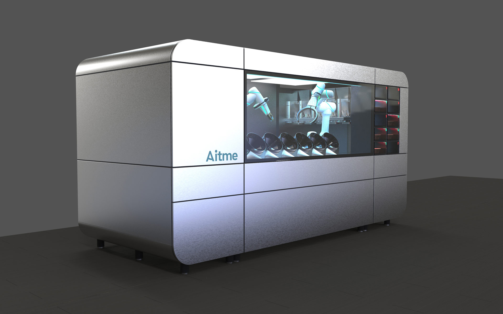
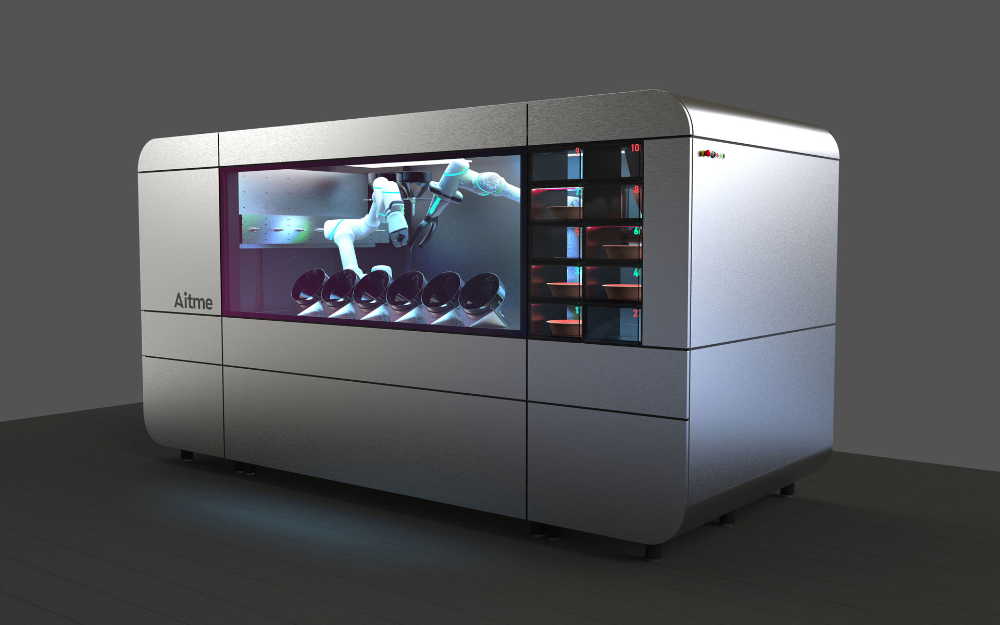
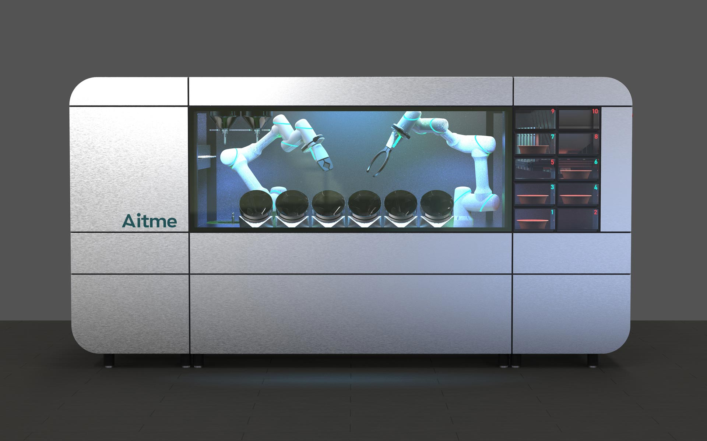
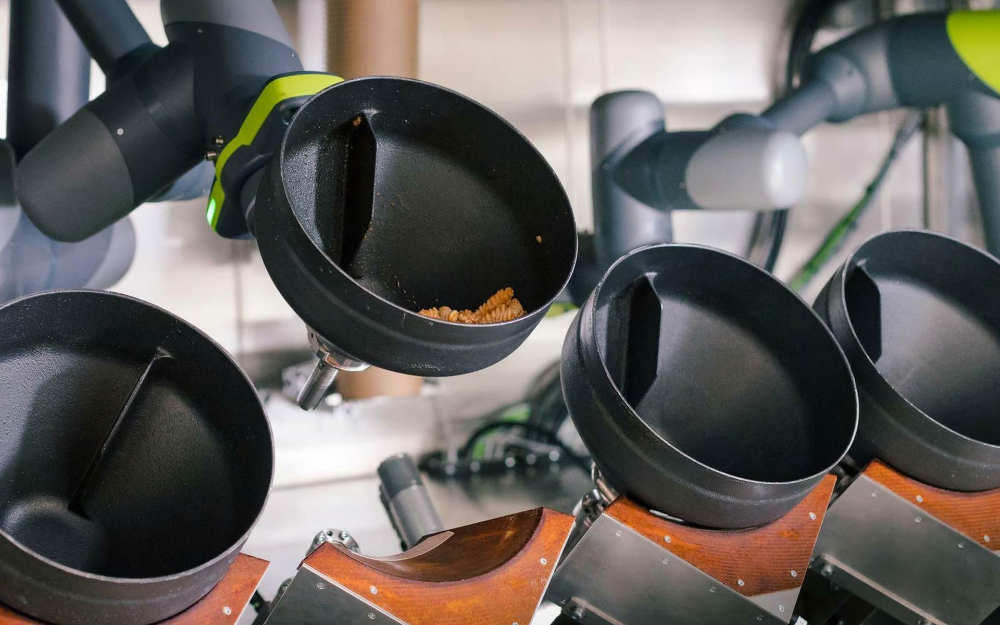

Circus CA-1
Robotic Kitchen
Circus CA-1
Roboterküche
The Circus CA-1 Robotic Kitchen is a fully automated robot kitchen that prepares various dishes such as pasta, risotto, bowls or salads from fresh ingredients completely independently.
It is a self-contained, self-sufficient system with two robots and several cooking pots working in
parallel
that can prepare around 60 dishes per hour. You can order either directly via a touchscreen or
conveniently
in advance via the app.
The appearance of the Circus CA-1 is based on the mix of a classic food truck and an Airstream food
truck.
The system is characterized by its hygienic design as it is easy to clean and thoroughly disinfected. It
is made entirely of stainless steel as the material is safe for the food sector. The machine is made
entirely of stainless steel, which is easy to clean and disinfect. The material is harmless for the food
sector and, in addition to constructive solutions, contributes to the hygienic design of the system. The
large glass pane takes away the anonymity of the robot kitchen. The guest can watch as the dish they
have
ordered is prepared and served via a serving tray after just a few minutes.
The robotic kitchen only requires eight square meters of space and requires only one water and one power
connection. The compactness of the system and the fact that it can be dismantled into smaller modules
that
fit through standard entrance doors allows it to be installed in small company canteens or break rooms.
But larger company restaurants and government canteens also benefit from the efficiency of the Robotic
Kitchen, because it is an important component in being able to offer high-quality, fresh and balanced
nutrition at any time, including off-peak and night times.
Die Circus CA-1 Robotic Kitchen ist eine vollautomatisierte Roboter-Küche, die verschiedene Gerichte wie Pasta, Risotto, Bowls oder Salate aus frischen Zutaten komplett eigenständig zubereitet.
Es ist ein in sich geschlossenes, autarkes System mit zwei Robotern und mehreren parallel arbeitenden
Kochtöpfen, das rund 60 Gerichte pro Stunde zubereiten kann. Bestellt wird entweder direkt über einen
Touchscreen oder bequem im Voraus per App.
Das Erscheinungsbild der Circus CA-1 orientiert sich an dem Mix aus einem klassischen Imbisswagen und
einem Airstream-Food-Truck. Die Anlage zeichnet sich durch sein hygienegerechtes Design aus, indem es
leicht zu reinigen und gründlich zu desinfizieren ist. Sie wird durchgängig aus Edelstahl gefertigt, da
das Material ist unbedenklich für den Food-Bereich ist. Die Maschine wird durchgängig aus Edelstahl
gefertigt, das sich einfach reinigen und desinfizieren lässt. Das Material ist unbedenklich für den
Food-Bereich und trägt neben konstruktiven Lösungen zum hygienegerechten Design der Anlage bei. Die
große
Glasscheibe nimmt der Roboterküche die Anonymität. Der Gast kann zusehen, wie sein bestelltes Gericht
zubereitet und nach wenigen Minuten über ein Ausgabefach serviert wird.
Die Roboter-Küche von Circus benötigt nur acht Quadratmeter Platz und kommt mit einem Wasser- und
einem Stromanschluss aus. Die Kompaktheit der Anlage und die Zerlegbarkeit in kleinere Module, die durch
gängige Eingangstüren passen, ermöglicht die Installation in kleinen Firmenkantinen oder Pausenräumen.
Aber auch größere Betriebsrestaurants und Behördenkantinen profitieren von der Effizienz der Robotic
Kitchen, denn sie ist ein wichtiger Baustein, um eine qualitativ hochwertige, frische und ausgewogene
Ernährung zu jeder Uhrzeit, auch in Rand- und Nachtzeiten anbieten zu können.




Images © Aitme GmbH, © Selić Industriedesign